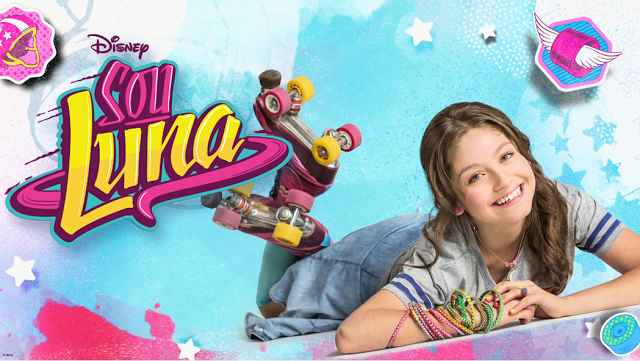
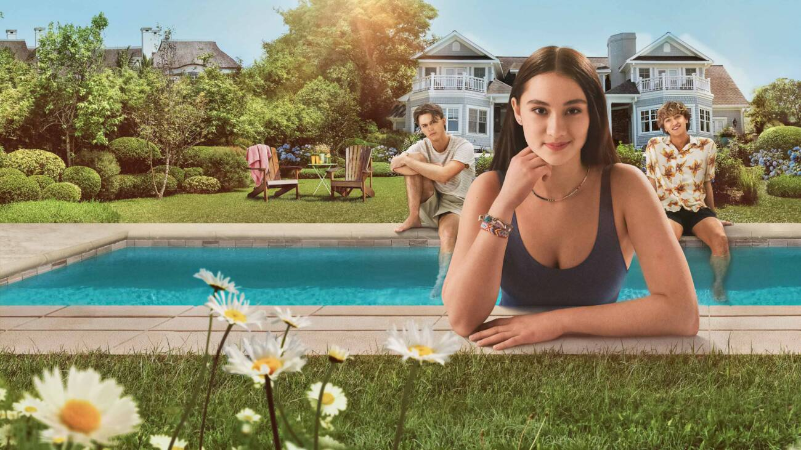
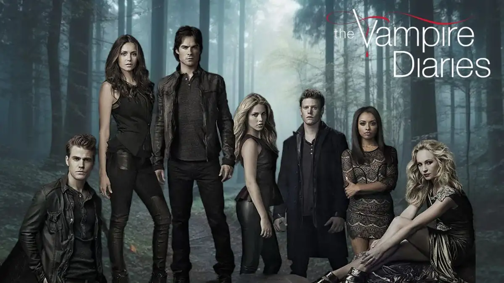
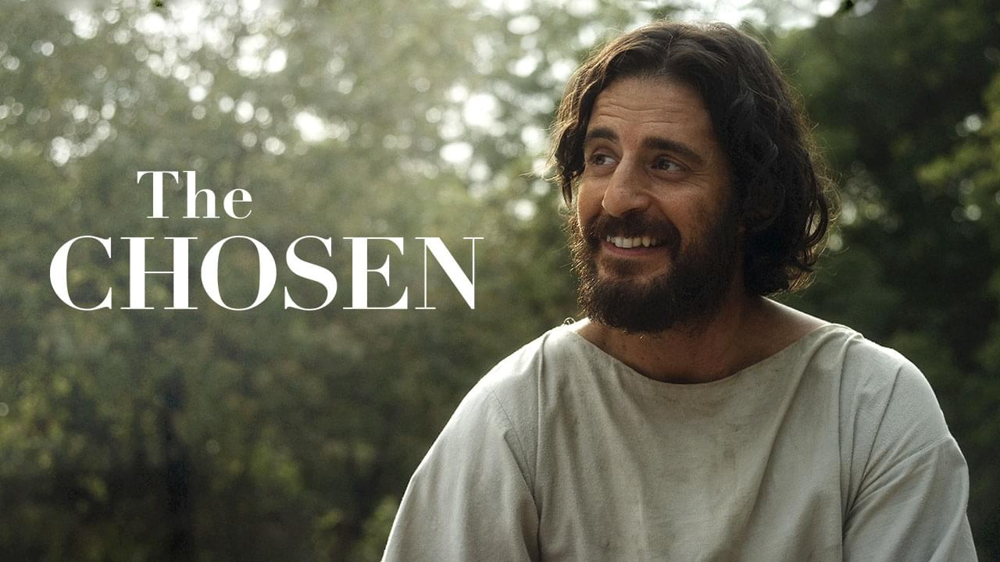

Menu
Filmes
Séries
Sinopses
Action
Another action
Something else here
Top 5 Séries favoritas da minha vida
Séries
Aperte para mudar a cor de fundo

Sou Luna
É uma série argentina que segue a história de Luna Valente, uma adolescente apaixonada por patins e música. Após mudar-se para Buenos Aires, ela descobre segredos sobre seu passado enquanto enfrenta desafios no mundo competitivo do roller derby e na busca pelo amor verdadeiro.

O verão que mudou minha Vida
Série envolvente que narra a jornada de um grupo de amigos durante um verão transformador, repleto de descobertas, amores e desafios. Entre festas na praia e momentos de reflexão, eles exploram as nuances da amizade e o impacto que as experiências de verão têm em suas vidas.

Diários de um Vampiro
"Diários de um Vampiro" é uma série que mergulha nas intrigas sobrenaturais de Mystic Falls, acompanhando a vida dos irmãos vampiros, Stefan e Damon Salvatore, e da jovem Elena Gilbert. Com romance, mistério e confrontos sobrenaturais, a trama revela segredos sombrios, rivalidades intensas e o eterno dilema entre a luz e a escuridão que molda o destino de seus personagens ao longo das oito temporadas.
Jardim de Meteoros
Série cativante que narra a jornada de uma garota comum, Shan Cai, ao ingressar em um prestigiado colégio frequentado por quatro jovens excepcionais conhecidos como F4. Em meio a dramas escolares, rivalidades e reviravoltas emocionantes, a trama desenrola-se explorando temas como amor proibido, auto-descoberta e o poder da amizade, tudo isso em um cenário repleto de glamour e desafios.

The Chosen
É uma série que segue a vida dos personagens bíblicos enquanto eles encontram Jesus de Nazaré e são chamados a segui-Lo.